The baseball bat neck
Obiettivo: mazza da baseball!

La tastiera si presenta ben incollata. Il buon incollaggio è garantito anche da un serraggio fatto bene: la pratica vuole che si usino 7 morsetti per il manico, la cui spaziatura risulta sufficiente da distribuire uniformemente la pressione su tutta la lunghezza della tastiera.
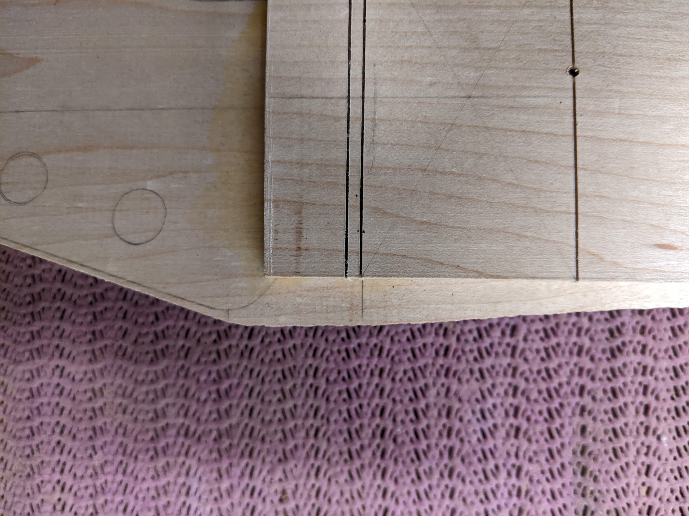
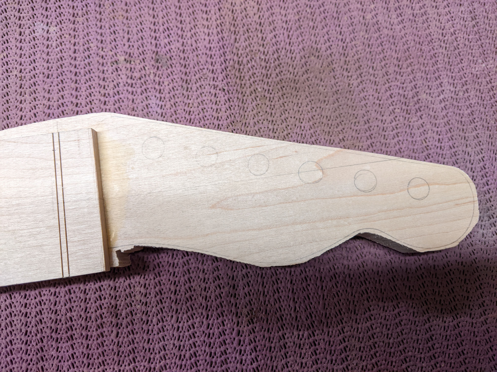
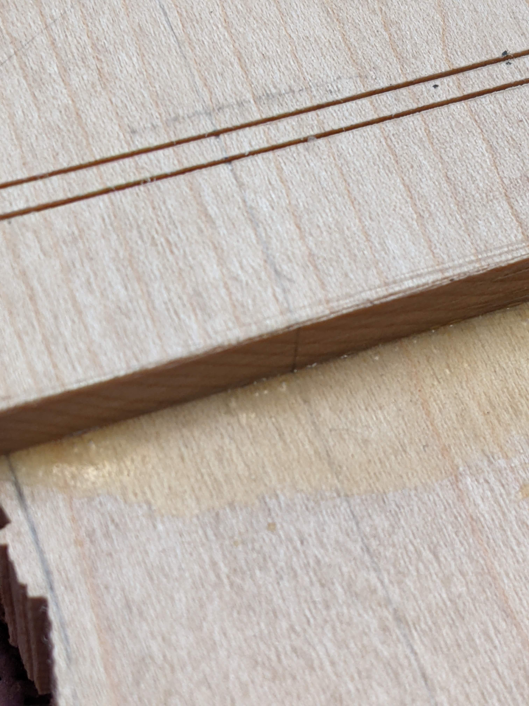
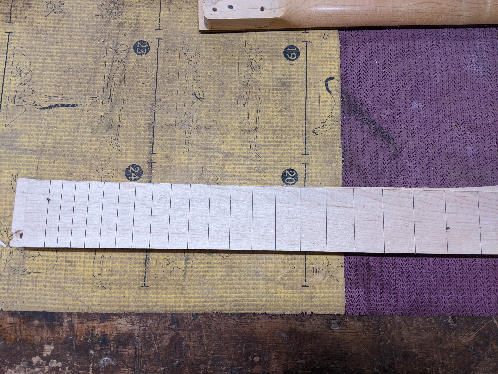
Nelle figure “a” e “d” si nota il foro passante che è servito per inserire dei chiodi di un paio di mm spessore. Servono per vincolare la tastiera alla manico una volta stesa la colla. Si procede in questo modo:
si tracciano gli assi longitudinali del manico e della testiera
con del nastro biadesivo si incolla temporaneamente la tastiera al manico facendo attenzione a far combaciare gli assi di tastiera e manico
si effettuano 2 fori (al primo e all’ultimo tasto) circa ad 1/3 di larghezza, in modo da non perforare il truss-rod
si eseguono due fori circa del diametro del chiodo
si piantano i chiodi e con una tenaglia si tagliano le teste, lasciando quindi la possibilità di estrarre la tastiera lasciando i chiodi in sede
si rimuove la tastiera e si procede alla stesura della colla (non troppa), ci si può servire di uno spazzolino da denti
si rimette in posizione la tastiera sfruttando i fori guida e si applicano i morsetti facendo ricorso ad un pezzo di legno sufficientemente spesso su cui i morsetti fanno presa
Sagomatura del profilo del manico
Da questo momento in poi inizia la lunga fase della sagomatura del manico. Questo è il momento più delicato di tutta la costruzione della chitarra, e lo spazio per non commettere errori è molto stretto.
La prima lavorazione fatta dopo aver tolto i morsetti è stata quella del taglio alla sega a nastro lungo profilo. Durante il taglio si cerca di stare il più vicino possibile alla linea del contorno (un paio di mm) in modo da non fare troppo lavoro con la raspa e la carta abrasiva.
Successivamente è iniziata la fase di lavorazione con la raspa. La prima faccia lavorata è stata quella della parte superiore della paletta, ovvero la linea parallela alle meccaniche.
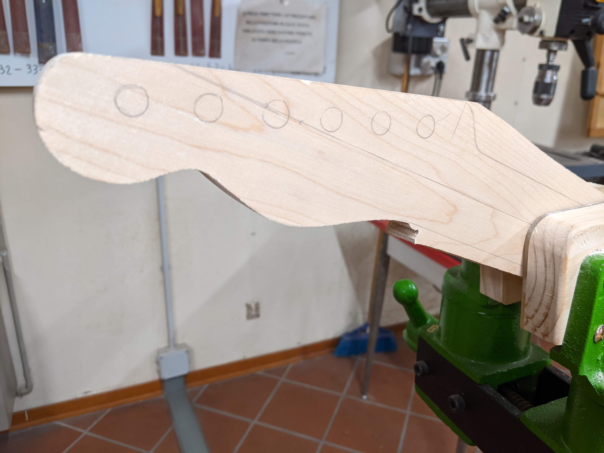
Si è passato successivamente ai fianchi, cioè ai piani lunghi e dritti. Bisogna stare molto attenti a mantenere il parallelismo con la linea, è molto facile andare storti o lasciare buchi o avvallamenti. In ogni caso con la raspa bisogna cercare di arrivare a ridosso della linea.
Per fare in modo che il fianco venga dritto si può costruire una dima fatta con un pezzo di multistrato alto (circa 3cm), assicurandosi che sia piano, e su cui si incolla della carta a grana grossa (80/120).
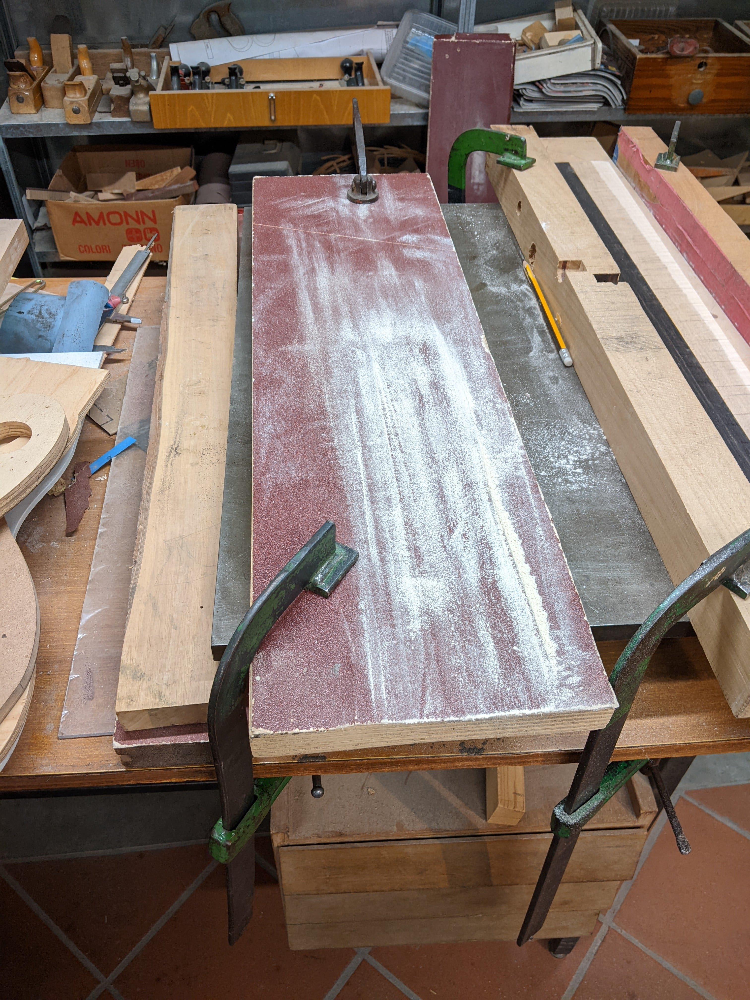
Dopo aver fatto un bel solco con la raspa all’altezza del capotasto tasto del MI basso, e per mia paura di fare altri solchi con la raspa ho iniziato a carteggiare quando non ero ancora ben vicino alla linea, questo ha comportato impiegare diverse ore nel carteggiare. I passaggi sulla carta pareggiano completamente il piano, che viene alla fine uniforme e parallelo alla linea bisogna però avere l’accortezza di premere il pezzo e contemporaneamente tenerlo a squadro.
A differenza delle parti lunghe e dritte, lavorare le parti curve con la raspa è un piacere, certamente un’operazione meno stressante. Finite le facce più lunghe, si è passato a asportare con la raspa le zone curve della paletta.
Paletta a spessore finale e raccordi vari
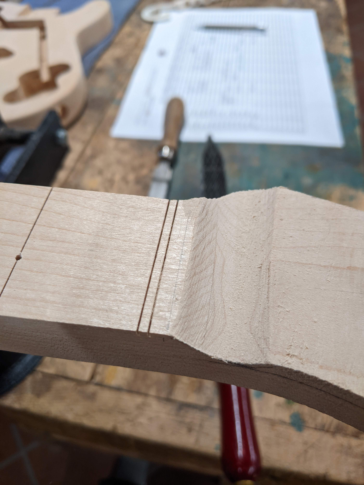
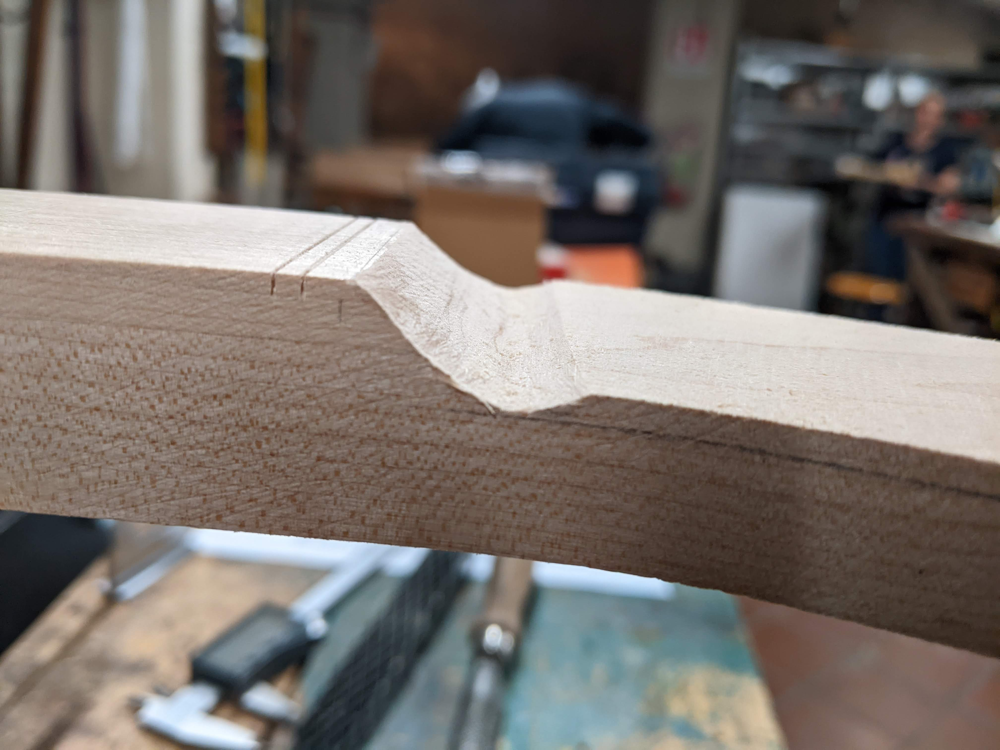
Una lavorazione tutto sommato non troppo difficile è stata quella di portare la paletta al suo spessore, cioè pari a 15mm. Si traccia un profilo curvo partendo da 5 mm dal copotasto e si raccorda con un profilo rettilineo lungo il contorno ad altezza fissa. Si procede dapprima con il lato tondo di una raspa nella zona vicina al capotasto e si porta il punto più in basso fino a toccare lo spessore finale. Poi una raspa piatta si asportano il materiale sul piano fino a raggiungere lo spessore.
Poi si è passato a raccordare gli spigoli del manico nella parte dello scasso in modo che siano perfettamente coincidenti quelli realizzata dalla fresata nello scasso del body. Questa operazione può essere fatta con una raspa leggera facendo molta attenzione.
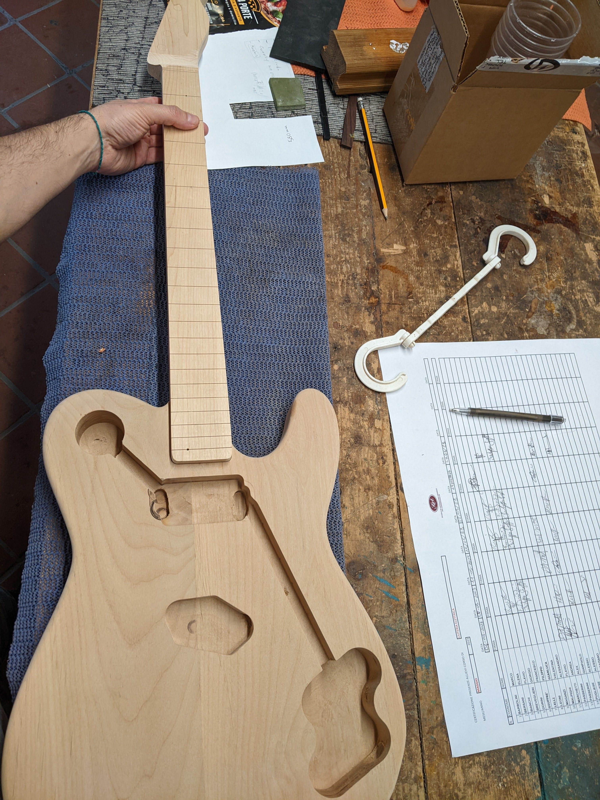
Tutto questo lavoro di asportazione con raspa e carta abrasiva può durare anche diversi giorni. Però alla fine di questa fase intermedia si inizia vedere una chitarra completa, ed è finalmente una bella soddisfazione.
Profilo della sezione del manico
Completata la sagoma principale, si passa alla lavorazione della sezione trasversale del manico. In questa operazione l’esperienza conta tantissimo perché è una lavorazione lunga, delicata, e che richiede un controllo continuo dell’avanzamento.
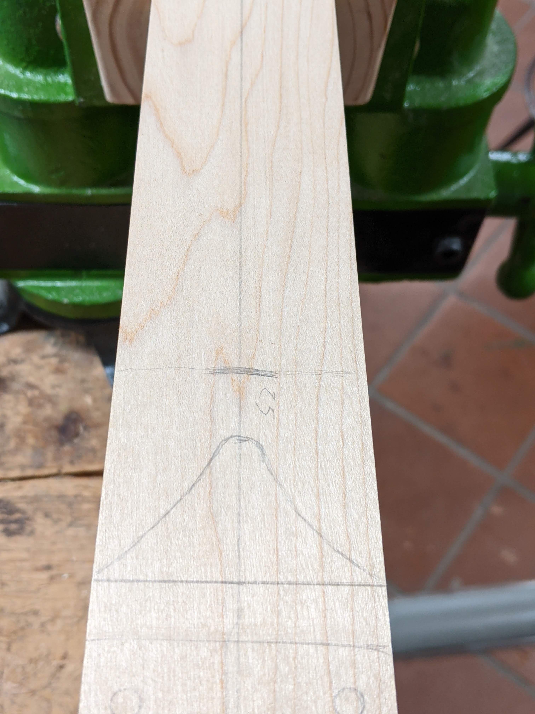
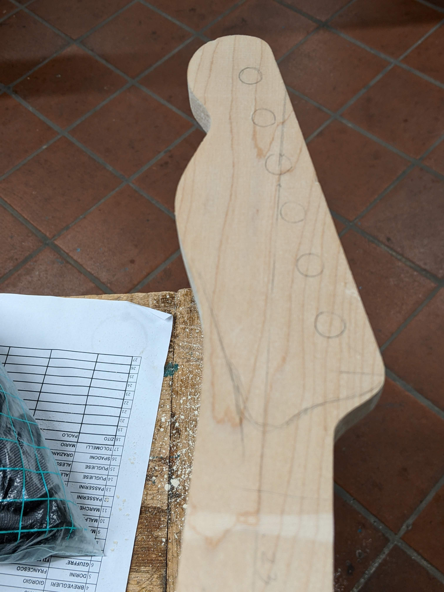
La lavorazione della parte posteriore del manico inizia con la quotatura e il disegno delle sagome, sia al tacco che alla paletta. Al tacco si disegna una sorta di campana simmetrica il cui punto massimo interseca l’asse longitudinale e alla paletta si disegna un profilo curvilineo a campana rovesciata asimmetrico. Il disegno in questo caso è stato fatto dal maestro liutaio ad occhio, quindi non riesco a riportare le misure esatte. La quotatura si completa tracciando, lungo l’asse, i punti estremi dell’intervallo in cui il manico ha un andamento lineare. All’esterno dell’intervallo il raccordo è curvilineo e sinuoso con le quotature del tacco e della paletta.
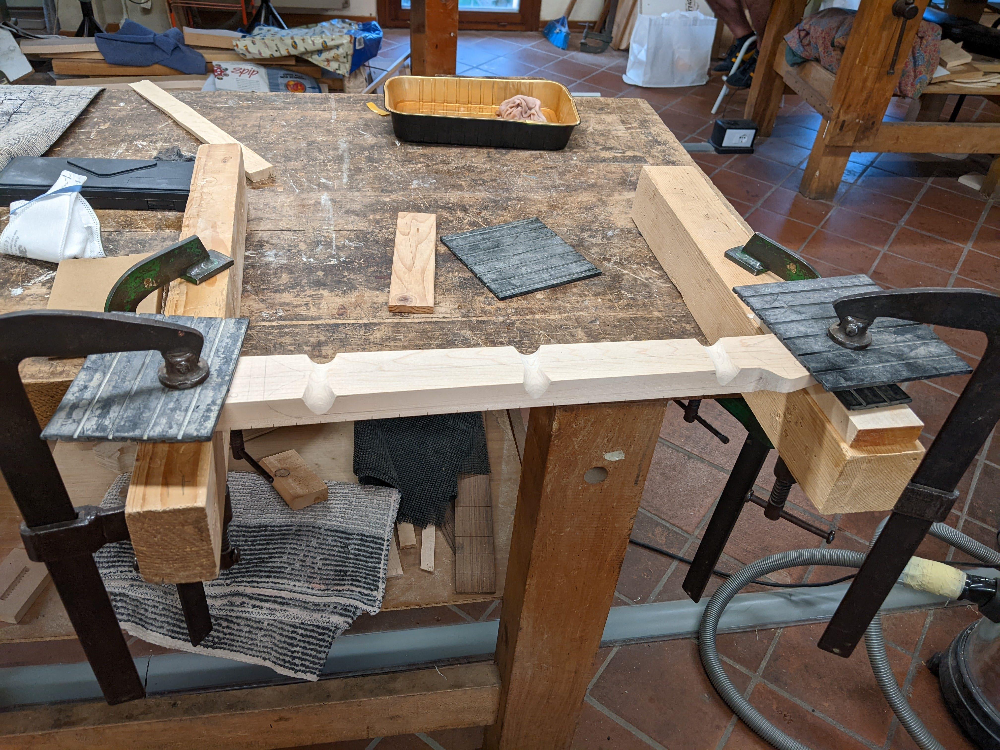
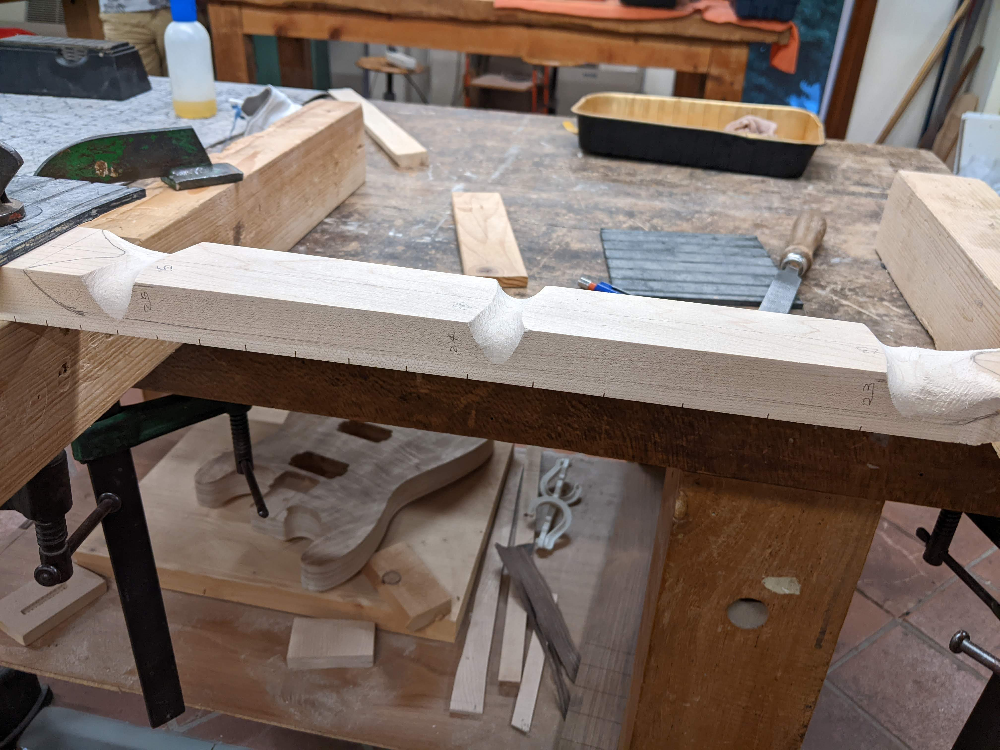
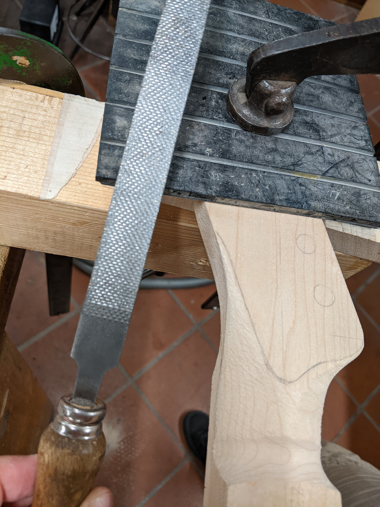
Si inizia quindi a lavorare con la raspa tonda il profilo della sezione trasversale in tre punti: agli estremi dell’intervallo di linearità e in mezzeria dell’intervallo stesso. Nel mio caso ho scelto un profilo trasversale molto bombato, che richiama i manici vintage anni ’60/70 (insomma una mazza da baseball). In questo caso le quote di riferimento sono 23, 24, 25 mm, rispettivamente a partire dall’estremo vicino al capotasto, e prese a partire dal piano della tastiera lungo la sua perpendicolare. Si procede quindi asportando materiale in direzione parallela al piano della tastiera raggiungendo nei 3 punti all’incirca le quote desiderate. I punti nelle immediatamente vicinanze all’asse sono, quindi, quelli più delicati perché danno il riferimento per la quota. Contemporaneamente si lavora anche il contorno curvilineo della sezione. Qui entra in gioco l’esperienza e l’occhio per le forme, e bisogna stare attenti a garantire un profilo simmetrico rispetto all’asse longitudinale.
Finita questa prima parte, si procede ad una prima sgrossatura di raccordo tra i punti estremi dell’intervallo di linearità con le forme sinuose di tacco e paletta. Anche in questo caso si procede con la raspa tonda stando attenti a non oltrepassare il tracciato.
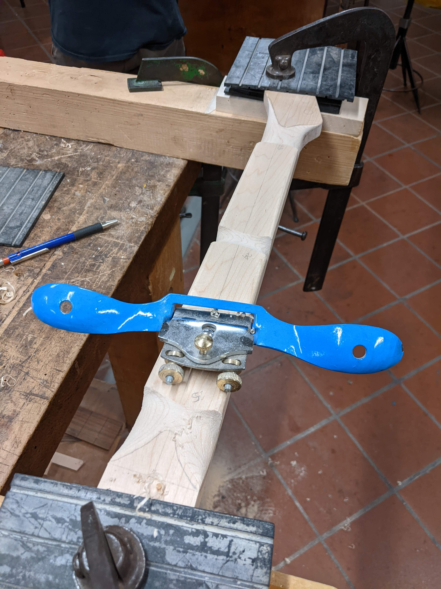
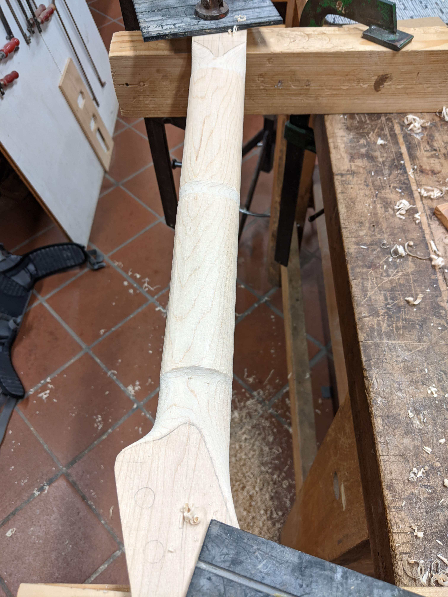
A questo punto, quando il profilo della sezione trasversale e le sezioni di riferimento sono a misura, si procede ad asportare la parte rimanente di materiale con un pialletto per sagomare (o “vastringa”, v. Figure 8). Un po’ alla volta il manico prende forma. Quando si arriva all’incirca ad 1 mm dalla quota finale, si utilizza la raspa facendo delle passate continue in direzione longitudinale, unendo con continuità i punti di riferimento. La lavorazione termina carteggiando con grana 220 e, a salire, 320. Ci si serve di un blocchetto rigido di forma allungata. Le passate con la carta devono essere continue e lineari. È molto importante nelle fasi finali della lavorazione (raspa e carteggio) controllare frequentemente la linearità del manico, servendosi di uno squadro opportuno. Puntando una lampada da dietro si può controllare se passa la luce sotto la riga. In questo caso si interviene con la carta a pareggiare.
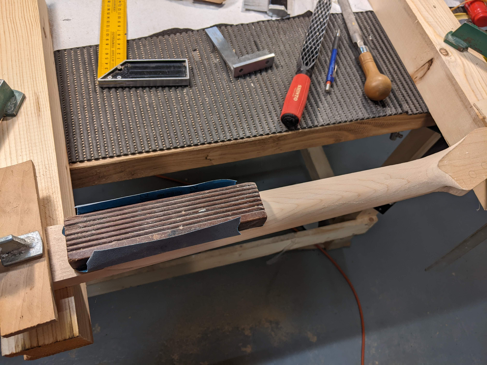
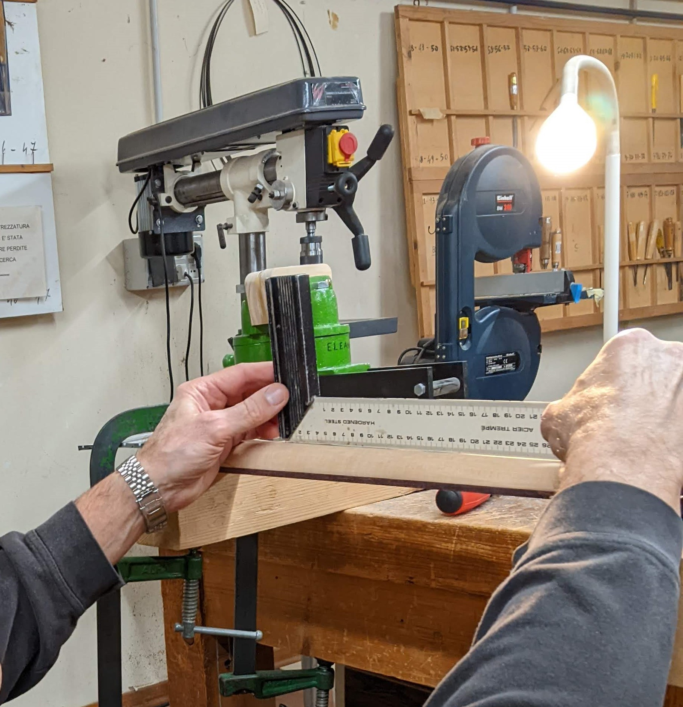
Le lavorazioni di sagomatura e profilatura del manico sono completate. È molto probabile che successivamente si debba tornare con la carta a lavorare alcune zone che al tatto sembrano sporgenti. Mi è capitato di doverci tornare più volte perché sentivo con i polpastrelli che c’era qualcosa che non andava. L’esperienza qui è tutto, ma in ogni caso la forma del manico è molto personale e può essere adattata alle proprie esigenze.